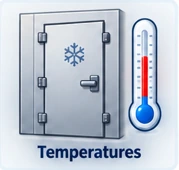

Plant Temperatures & Coolers
Sign in with your United Dairy Google account.
Temperature Monitoring · Sensor + Manual Entry
Plant Temperatures & Coolers
TEST COPYSaves stay in the new app's test copy

Current Temperature Readings
Live sensor readings and manual entries for each plant location.
| Date / Time | Sensor Name | Temperature | Status | Battery | Notes | Logged By |
|---|